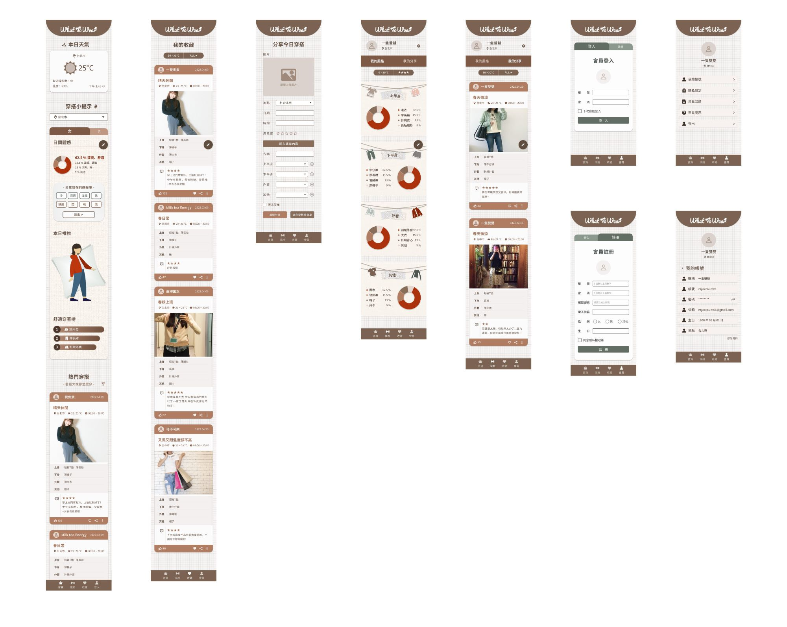

換季期間，一不小心得面臨穿著大衣被熱暈、短袖出門瑟瑟發抖的窘境，光看氣象決定穿著已不再準確，時常絞盡腦汁卻仍穿出不符合天氣的服裝。如果有一個穿搭網頁，可以分享當日穿著、互相參考不同時間與地點的適宜穿搭，這一切是不是會容易很多呢？
【釐清需求】
目的
氣候變遷越發極端，人們越來越無法預測每日該如何穿著，才能度過舒適的一天。
尤其換季時每天天氣差異大，不只本地居民，外地人出遊或聚會、商務人士出差也難以判斷該如何選擇衣著。
因此透過網頁，收集大家對當日服裝的心得與建議，讓更多迷茫的人們有所依據。解決用戶穿搭難題的同時，結合時下流行的 OOTD (Outfit of the Day，本日穿著)，讓會員可以分享自己在特定天氣的穿著。
功能
具有查詢天氣、地點、統計各類穿著、分享與回饋功能。 使用者主要分為分享者與參考者兩類。會員登入後可以自由選擇要分享自己當日穿搭，或參考其他人穿著。 欲分享者進入頁面選擇所在區域並分享當日穿搭，包括服裝、場所、感受。 參考者可參考一日內、三日內、七日內分享者分享的穿搭統計資料。或直接查看不同分享者的穿搭感受，按讚參考度較高的內容。 未登入會員的訪客，只能做為參考者，無法進行互動、無法分享。
效果
出門前上What to Wear參考今日天氣、大家穿搭，出門後透過簡易按鈕，分享自己的穿搭，並標註優缺點與舒適度，供其他人參考。 網頁著重在資訊收集與分享，對於穿著的判斷與解釋由使用者自行解讀。
透過網頁，解決用戶穿搭難題。並結合時下流行的 OOTD (Outfit of the Day，本日穿)，讓會員可以分享自己在特定天氣的穿著。【Figma 線框與擬真】
Prototype 效果
Wrap Up 小結
想了解更多的話...
- 點擊連結進入 Figma： Redesign - Bosch
- "返回首頁" 觀看其他案例
這次 Redesign 的 Primary Button 和 Primary Color 等都沿用原設計，讓重新設計後的成果看起來不會太突兀。
在維持原品牌形象下，透過增加簡易流程圖、新增銜接各頁面之按鈕等，使整體註冊流程使用更順暢。
並用簡單的 Accordion 開合效果，讓手機版首頁原本繁雜的版面更為精簡，提升手機使用者使用體驗。